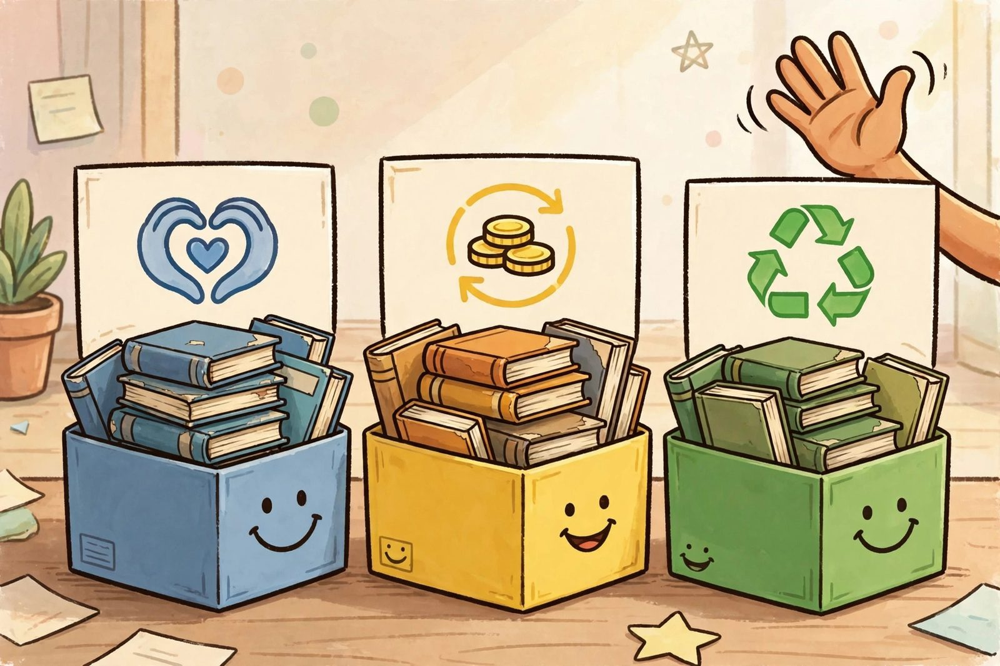

When to Actually Let Them Go: Donate, Sell, Recycle

No jokes for a minute. There comes a point when the doorstops, tables, and garden risers are done and the books still remain. If a textbook has sat untouched for years and you've already squeezed the comedy out of it, the kindest thing is to move it along. Here's a straight answer on the three real options — no guilt spiral included.
Donate
Donation works when the book still has usable life in it. Local libraries sometimes accept book donations, though many won't take dated textbooks, so a quick call first saves you a wasted trip. Schools, adult-education programs, community centres, and shelters are often a better fit — reference material doesn't need to be the current edition to be useful for tutoring or self-study. Thrift and charity shops generally accept books by the box; check their drop-off rules before loading up the car. The honest test: if you wouldn't hand it to a friend and say "this might help you," it's probably not a donation candidate — it's a recycling candidate.
Sell
Textbooks are one of the few book categories that actually resell, at least while an edition is still in use. Campus bookstores often run buyback programs near the end of each term; the payout is rarely thrilling, but it's money for books that were doing nothing. Local used bookstores buy selectively and price by demand, so bring the stack and take what they offer. Online marketplaces and general buyback websites broaden the buyer pool — list with the exact title, author, and edition, because edition is everything in textbook pricing. Condition matters: clean, unmarked copies sell; heavily highlighted ones mostly don't. Be realistic about the value of anything more than a few editions old — sometimes the buyback quote is the punchline.
Recycle
When a book is too outdated to donate and too worthless to sell, recycling is the responsible exit. Paperback books can usually go straight into paper recycling. Hardcovers are trickier: the cover, spine glue, and binding may need to be removed before the pages can be recycled, and rules vary by municipality. Check your local waste program's guidelines — many publish a specific note about books. If your curbside program doesn't take them, a local recycling depot often does. Removing the hard covers yourself takes a few minutes per book and makes the pages fully recyclable. It's unglamorous work, but it's the difference between a book's final chapter and a landfill.
Decide in one afternoon
The paralysis is the real enemy — not the books. Here's the whole process: pull every textbook off the shelf, sort into three piles (donate, sell, recycle) using the test above, and put each pile in a box or bag on the same day. List or drop off the donate and sell piles within the week; schedule the recycling run for the weekend. Books that survive this process get to stay — and now they're the keepers, the ones you actually open, or at least the ones with a genuine job like holding up your monitor.
The keepers earn their place
Not every book has to go. Some textbooks genuinely earn their shelf space: the reference you still crack open, the one with your own notes in the margins, the dictionary-sized volume that's irreplaceable. Keep those without guilt — a shelf with five books you use beats a shelf with fifty you don't. The goal isn't minimalism; it's honesty. If a book has a job — reading, reference, or doorstop — it stays. Everything else is inventory waiting for a decision.
Every book on this site earned its comedy career. But the sincere truth is this: a textbook doing nothing on your shelf helps no one, and a donated or recycled book is worth more than a dusty one. Let the good ones go. Keep the doorstop.